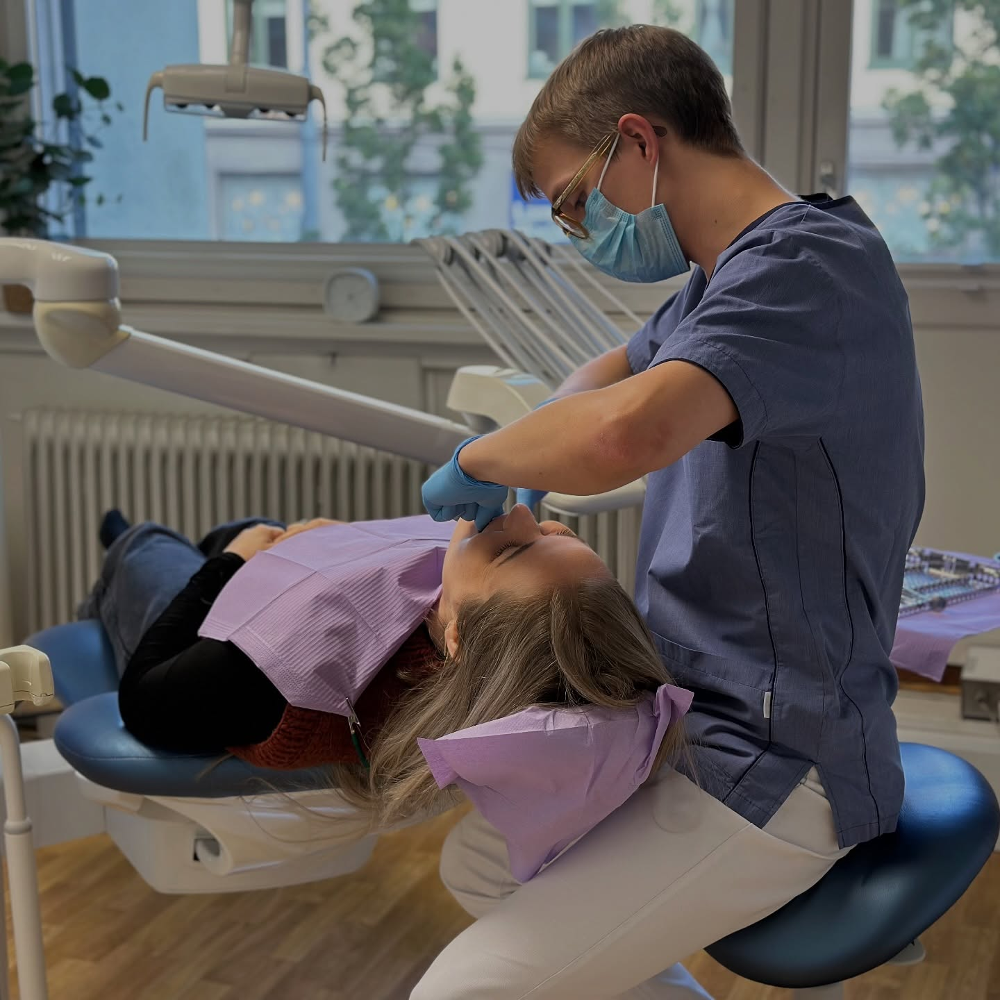
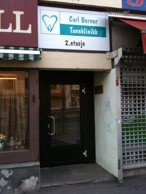

Vi er fire tannleger og to tannlegeassistenter som jobber tett sammen for å gi deg trygg, personlig og faglig sterk tannbehandling.

Carl Berner Tannklinikk har vært en del av nabolaget i mange år. Vi tror på langsiktig tannhelse: at hver kontroll skal være en god opplevelse, og at du skal kunne komme tilbake uten nye hull.
Vi tar oss tid til å lytte. Det betyr trygg behandling også for deg som har tannlegeskrekk, og en plan som er tilpasset akkurat deg – ikke en standardpakke.
Vi er fire tannleger og to tannlegeassistenter med ulik bakgrunn og spesialfelt – men samme mål.
Tannlege & klinikkeier
Anne Grete har drevet Carl Berner Tannklinikk i en årrekke og har lang erfaring med generell tannbehandling. Hun er opptatt av forebygging og at pasientene skal føle seg trygge og godt ivaretatt.
Tannlege
Nina jobber med hele bredden av tannbehandling – fra rutinekontroller og fyllinger til mer omfattende behandlinger – og legger vekt på god kommunikasjon med pasienten.
Tannlege
Magali er en faglig sterk tannlege med bred erfaring. Hun er opptatt av nøyaktighet og estetiske resultater, og tar seg gjerne tid til å forklare behandlingen underveis.
Tannlege
Rasmus er faglig oppdatert og brenner for moderne, skånsom tannbehandling. Han har et avslappet og vennlig vesen som mange opplever som trygt – også deg som er litt nervøs for tannlegen.
Tannlegeassistent
Ann-Mari sørger for at hverdagen i klinikken går smidig. Hun tar gjerne i mot deg i resepsjonen og er en trygg støttespiller i stolen sammen med tannlegen.
Tannlegeassistent
Siri er en erfaren tannlegeassistent som bidrar i hele pasientløpet – fra timeavtale og forberedelser til assistanse under behandling.

Klinikken vår ligger lett tilgjengelig på Carl Berners plass, i Trondheimsveien 110A, 2. etasje. Inngangen er på høyre side i retning sentrum – du ringer på klokken merket «TANNLEGE» ved døren mellom Dr Dropin og Cutters.
Du kommer enkelt til oss med T-bane, buss, trikk, sykkel eller til fots. Kjører du bil, har vi to parkeringsplasser i bakgården – innkjørsel fra Dælenenggata eller Tromsøgata.